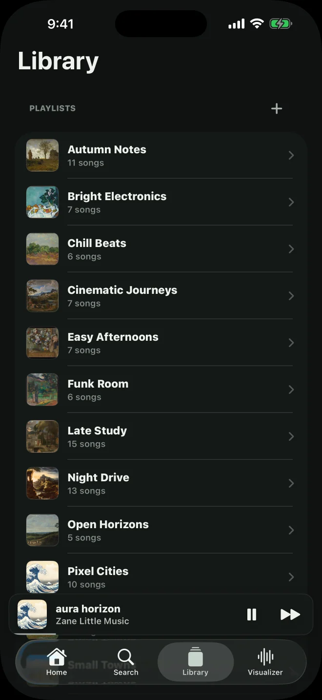
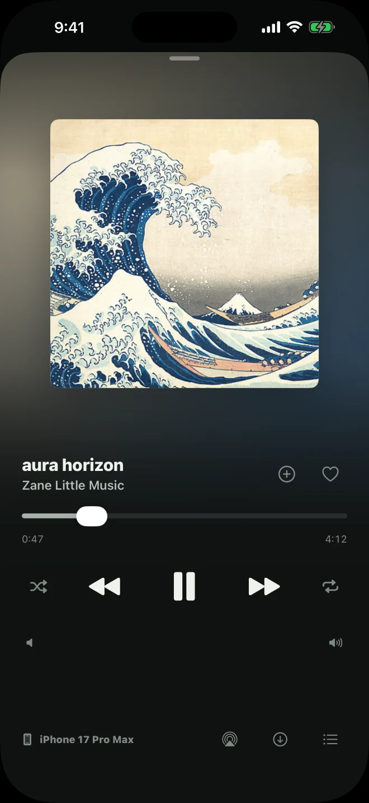
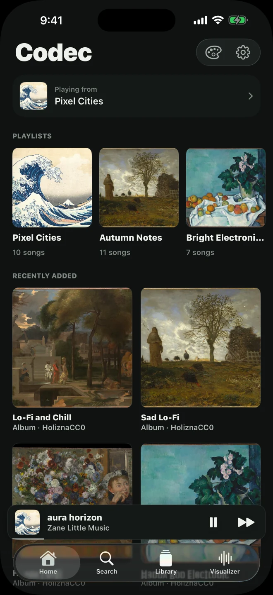
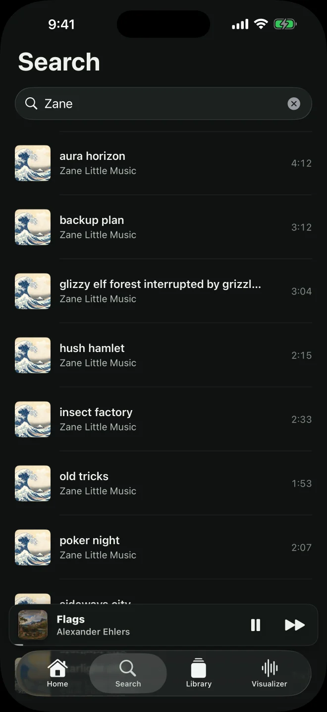
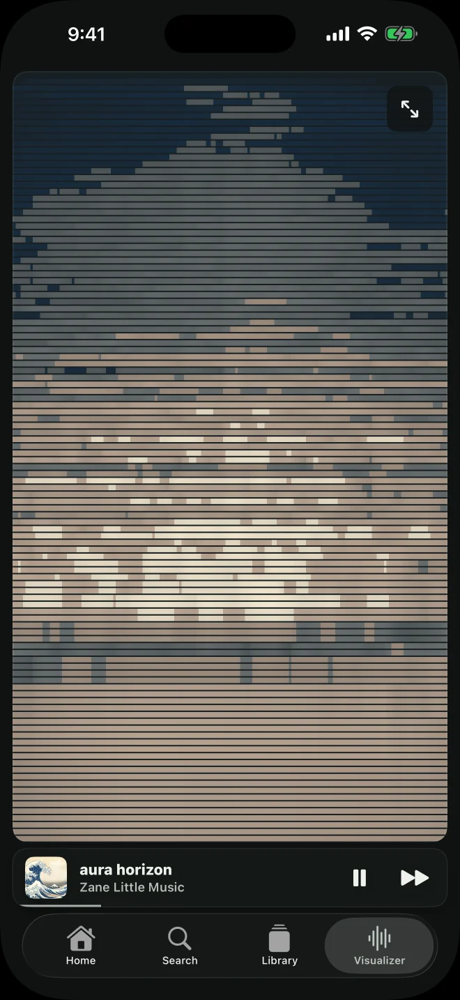
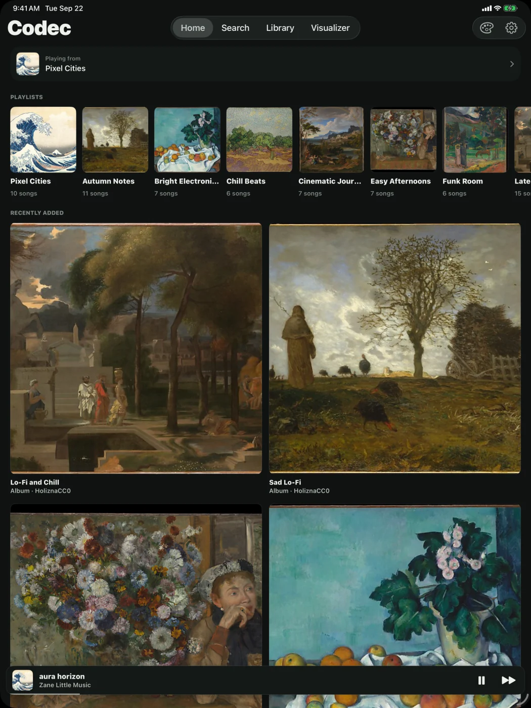
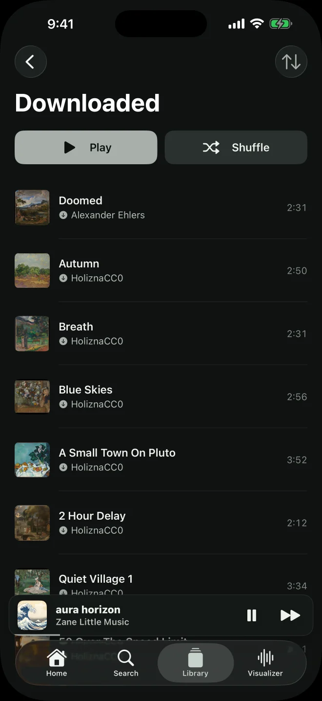
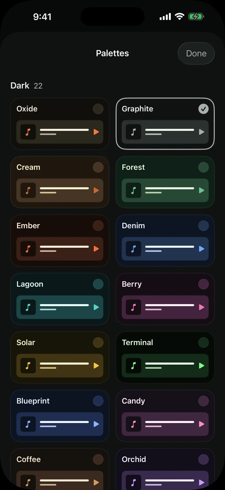

Self-hostedmusic player.
Keep your music on a server you run. Listen on your iPhone, iPad, or in your browser.


The app
Browse your library, make playlists, and play music.
{kind=link}

Home
Recently played playlists and new music.
{kind=link}

Search
Search by song, artist, or album.
{kind=link}

Visualizer
Reacts to the audio using colors from the cover art.
Use it across
your devices.
Connect your devices to the same server. Switch where music is playing without rebuilding your queue.
{kind=link}

Downloads and appearance
Save music for offline listening. Change the app’s colors.
{kind=link}

Downloaded music
Play songs saved on your iPhone or iPad without a server connection.
{kind=link}

Color palettes
33 palettes, including Graphite, shown here.
How to set it up
Run the server
Run the Codec server on a computer at home or a small cloud server. Keep it on when you want to stream.
Read the setup guideAdd music
Import your files through the web player. Your server stores the music, playlists, and artwork.
Read the format guideConnect the app
Enter your server address and auth token in Codec. To stream away from home, your server needs to be reachable over the internet.
Connect away from home
Questions
Does Codec come with music?
No music catalog is included. Codec plays the files you add to your own server. The screenshots show a separate licensed demonstration collection.
Do I need to run a server?
Yes. Your server stores the music and keeps your devices in sync. You can run it on a computer you already have, or rent a small cloud server. The browser player comes with it.
Can I listen without internet?
Yes, with music you’ve downloaded to your iPhone or iPad. Other songs need a connection to your server.
How do I set it up?
Follow the hosting guide to install the server and web player, then connect your devices with your server address and token.
Set up your server
The hosting guide covers downloads, installation, and connecting your devices.
Read the hosting guide